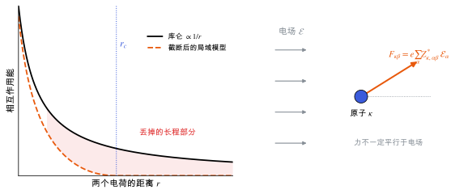

机器学习势中的长程静电与电场响应
局域的机器学习势只给能量、力和应力，没有电荷与极化；要算介电、压电这类对电场的响应，需要额外学习玻恩有效电荷或显式的静电项。
直观阅读需要
- 机器学习势：截断半径与局域性
- 库仑相互作用
只是提示，不需要先读完才能往下看。
直觉直观解释
机器学习势 中的局域模型有两个与电场相关的缺口。
- 长程静电：库仑相互作用按 1/r 衰减，很慢。截断半径之外的部分被丢掉，或者只能被“平均地”吸收进局域项。对中性的分子晶体，总能里这部分的影响可能不大，但对离子体系、界面和带电缺陷影响明显。
- 没有电场这个输入，也没有极化这个输出：模型只把原子坐标映射到能量。介电常数、玻恩有效电荷、压电张量都是对电场的响应（见 介电张量与玻恩有效电荷 与 压电张量），局域 MLIP 的标准输出给不出来。
对压电来说，第二个缺口更要紧：离子弛豫贡献需要 Born 有效电荷 Z^{*}，它描述电场在原子上产生多大的力，或者原子位移产生多大的极化。

| 符号 | 是什么 | 图里对应 |
|---|---|---|
| r | 两个电荷的距离 | 左图横轴 |
| r_c | 局域模型的截断半径 | 左图蓝色点线 |
| \boldsymbol{\mathcal{E}} | 外加宏观电场 | 右图灰色箭头 |
| \kappa | 原子标号 | 右图蓝色原子 |
| Z^{*}_{\kappa} | 原子 \kappa 的 Born 有效电荷张量（3×3） | 右图力与电场的关系 |
| F_{\kappa\beta} | 电场在原子上产生的力的 \beta 分量 | 右图橙色箭头 |
定义与公式数学与推导
压电离子项需要什么
压电张量的离子弛豫贡献（记号与 压电张量 相同）：
其中 \bar e 是钳位离子项（纯电子响应）；\Omega 是晶胞体积；m 遍历所有原子位移自由度；Z^{*}_{m\alpha} 是 Born 有效电荷；\partial u_m / \partial \eta_j 是应变引起的内部原子弛豫 [Wu, Vanderbilt & Hamann 2005]。
拆开来看：
- \partial u_m / \partial \eta_j 只需要能量对坐标和应变的二阶导数（力常数和内应变张量），普通的 MLIP 可以给。
- Z^{*} 和 \bar e 是电场响应，普通的 MLIP 给不了。
几类做法
| 做法 | 模型学什么 | 能给什么 | 局限 |
|---|---|---|---|
| 局域 MLIP | 原子能 | 能量、力、应力 | 没有电场响应 |
| 局域 MLIP + 固定或学习的点电荷 + Ewald 求和 | 每个原子的标量电荷 | 长程静电能 | 标量电荷给出的 Z^{*} 是各向同性的，通常不够 |
| 电荷平衡（第四代神经网络势） | 原子电负性，再全局求解电荷分布 | 长程静电与非局域电荷转移 | 计算量更大 [Ko et al. 2021] |
| 直接学 Z^{*} 或极化 | 等变的二阶张量或向量输出 | Born 电荷、红外强度、电场下的力 | 需要 DFT 的 Z^{*} 或极化标签 |
神经网络势的发展从局域的第二代，到加入长程静电的第三代，再到含非局域电荷转移的第四代，Behler 的综述有系统梳理 [Behler 2021]。
直接学 Z^{*} 时，输出要是等变的二阶张量（一般不对称，可以分解为 l=0,1,2 三部分，见 对称性与等变性），并且要满足求和规则（例如预测后把每个分量的平均值减掉）。
在本研究线里的样子对应与边界
β-甘氨酸压电的一种组合方案：
- 钳位离子项 \bar e 和 Z^{*} 用 DFT（DFPT 或有限差分）算一次；
- 力常数和内应变用 MLIP 算，或者也用 DFT；
- 按上面的公式合成 e_{\alpha j}，再用弹性张量换算成 d_{ij}（见 压电张量 与 弹性张量）。
这样 MLIP 只负责它擅长的部分，是否值得取决于 DFT 计算力常数的代价。其他要点：
- 有限温度：若要在 MD 采样的多个构型上平均压电系数，每个构型都需要 Z^{*}，这时学习 Z^{*} 的模型才真正有用（见 分子动力学）。
- 分子晶体的长程静电：中性分子的偶极–偶极相互作用随 1/r^{3} 衰减，比单电荷快，但仍可能超出截断。是否影响多晶型排序，要用 DFT 对照检查。
常见坑对应与边界
- 用 MLIP 的力常数配 DFT 的 Z^{*}，两者对应的结构不同：所有量都要在同一个平衡结构上算。
- 忘记求和规则：Z^{*} 的小误差违反求和规则时，会在压电和介电结果里产生虚假的贡献。
- 把标量部分电荷当成 Born 电荷：Born 电荷是动态响应量，与 Bader、Mulliken 这类静态电荷分配不同，通常也不一样大。
- 以为局域模型“学到了”静电就能算电场响应：能量里吸收了平均的静电效应，不代表模型知道电场下会怎样。
检验自己对应与边界
参考资料
论文Behler 2021
尚未实际查阅，目前只是拟查阅书目
论文Ko et al. 2021
尚未实际查阅，目前只是拟查阅书目
论文Wu, Vanderbilt & Hamann 2005
尚未实际查阅，目前只是拟查阅书目
论文Unke et al. 2021
O. T. Unke et al., Machine Learning Force Fields, Chem. Rev. 121, 10142 (2021)
尚未实际查阅，目前只是拟查阅书目
论文Doyu et al. 2026
尚未实际查阅，目前只是拟查阅书目
论文Husistein et al. 2026
尚未实际查阅，目前只是拟查阅书目
分类机器学习 · 概念 · 研究线：机器学习势、压电与响应计算 · 状态：草稿